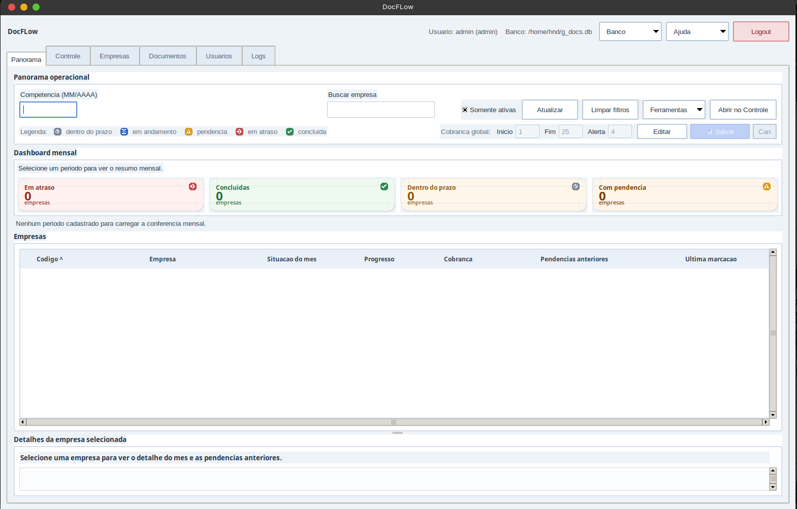
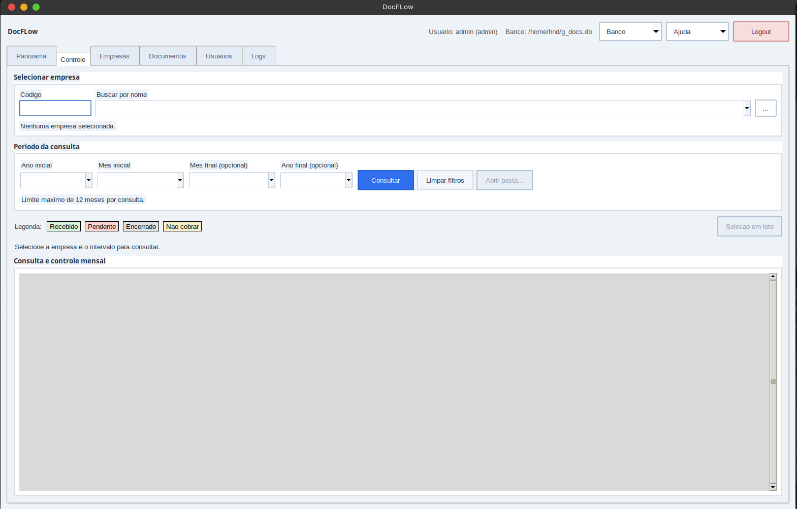
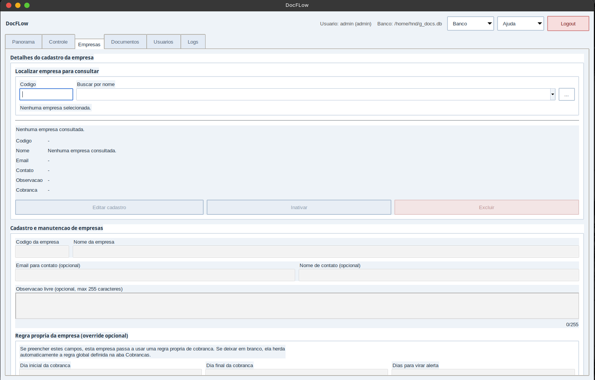
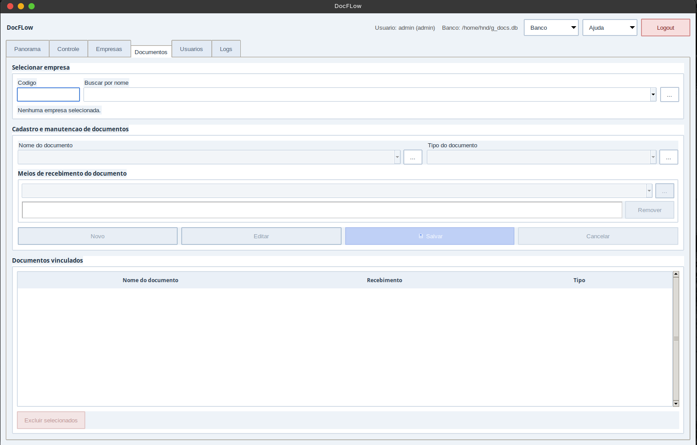
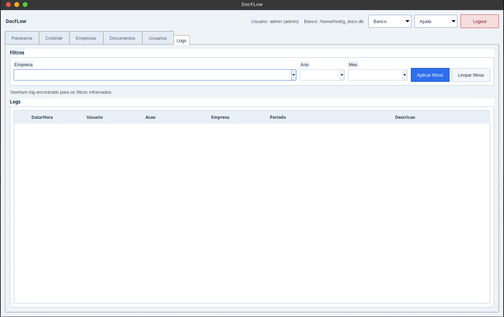

Desktop local • Python • SQLite
Desktop local • Python • SQLite
DocFlow
Aplicação desktop local para controle mensal de documentos empresariais. Substitui planilhas por um fluxo simples: empresa, período, status e pendências num só lugar.
Como surgiu
Uma rotina administrativa que precisava de um fluxo melhor
O DocFlow surgiu de uma necessidade prática: acompanhar o recebimento mensal de documentos de várias empresas sem depender de planilhas espalhadas, filtros manuais e abas que acumulam informação solta. Quando o controle fica assim, é fácil perder o que ainda está pendente e só perceber tarde demais.
A ideia foi centralizar tudo: cadastro de empresas, tipos de documento, períodos de entrega e status de recebimento dentro de uma aplicação local que roda sem internet, sem conta e sem dependências externas. O banco fica no próprio computador.
Foi o primeiro projeto que desenvolvi com o objetivo claro de resolver um problema real, não só praticar código. Isso mudou bastante como eu pensei em cada decisão durante a construção.
Cada aba tem uma função específica
Panorama operacional
A tela principal mostra um dashboard mensal com o status geral de todas as empresas: quantas estão em atraso, concluídas, dentro do prazo ou com pendência. Uma tabela abaixo lista cada empresa com a situação do mês, progresso de recebimento, cobrança e pendências anteriores.
O filtro por competência permite selecionar qualquer mês e carregar o resumo correspondente com um clique.

Controle por período
A aba de Controle permite selecionar uma empresa e um intervalo de até 12 meses para ver o histórico de recebimentos. Cada linha mostra o documento, o mês e o status atual, com as opções Recebido, Pendente, Encerrado e Não cobrar acessíveis direto na lista.
A seleção em lote permite atualizar vários itens de uma vez, o que economiza bastante tempo nas atualizações mensais recorrentes.

Cadastro de empresas
Cada empresa tem código, nome, e-mail de contato, observação livre e uma regra própria de cobrança. Quando a regra da empresa está em branco, ela herda automaticamente a regra global configurada no Panorama.
A tela também permite inativar e excluir cadastros, mantendo o histórico de empresas que deixaram de operar sem apagar os registros antigos.

Documentos vinculados
Cada empresa tem uma lista de documentos que precisa entregar mensalmente. É possível configurar o nome do documento, tipo e meio de recebimento, que pode ser mais de um por documento.
Os documentos vinculados aparecem na tabela de Controle para cada competência, formando o conjunto completo do que precisa ser conferido todo mês para aquela empresa.

Logs administrativos
Toda movimentação importante dentro do sistema fica registrada na aba de Logs: qual usuário fez a ação, qual empresa foi afetada, o período e a descrição do que aconteceu.
Os filtros por empresa, ano e mês permitem localizar rapidamente um evento específico, o que é útil para auditar alterações e entender o histórico de operações de qualquer período.

Como foi construído
Python
Lógica do sistema e regras de negócio
Tkinter
Interface desktop nativa • sem dependência de browser
SQLite
Banco local como arquivo • sem servidor
openpyxl
Exportação de pendências em Excel
Código aberto no GitHub
O repositório tem o código completo. Só precisa de Python instalado para rodar.
Ver repositório